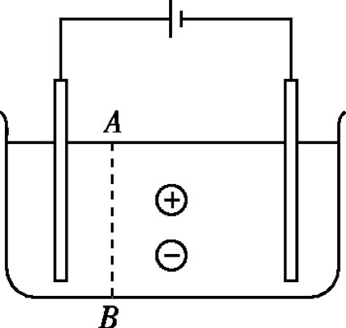

电源和电流
为什么闪电只能存在一瞬，而手电筒中的小灯泡能够持续发光？
电源
- 导线和导体中的电荷怎么移动？电荷为什么会移动
- 为什么电流只是瞬间的？
- 如何才能使导线中存在持续的电流？
- 因为带电体在空间中激发出电场，自由电子在静电力的作用下沿导线做定向移动，我们把这种电荷的定向移动称为电流
- 因为随着电荷的移动，A、B 之间的电势差很快消失，两导体成为等势体，达到静电平衡，自由电子不能持续地定向移动
- 电源的作用：搬运电荷，从而保证两极之间始终存在电压
- 形成持续电流的必要条件：电路中有电源
电源概念
- 定义：电源是能把自由电子从正极搬运到负极的装置．
- 作用：搬运电荷，从而保证两极之间始终存在电压
- 形成持续电流的条件：
- 存在自由电荷：金属导体——自由电子；电解液——正、负离子；
- 导体两端存在持续的电压即有电源。
电流
恒定电场
由稳定分布的电荷所产生的稳定的电场，叫作恒定电场
- 尽管这些电荷也在运动，但有的流走了，另外的又来补充，电荷的分布是稳定的，不随时间变化，电场的分布也不会随时间变化；
- 恒定电场是由电源、导线等电路元件所积累的电荷共同形成的。
恒定电流
在恒定电场的作用下，导体中的自由电荷做定向移动。那么这个移动的速度会不会随着时间的推移而越来越快？
在运动过程中与导体内不动的粒子不断碰撞，碰撞阻碍了自由电荷的定向运动，结果是大量自由电荷定向运动的平均速率不随时间变化。
大小和方向都不随时间变化的电流叫做恒定电流
电流的定义
如何描述校门口的车流量大小？尝试总结几个关键要素
电流定义：单位时间内通过某个横截面的电荷量
定义式：I=\frac{q}{t}
单位：安培，是国际单位中的基本单位，1\;C=1\;A\cdot S
电流方向：正电荷定向移动的方向为电流方向（标量）
练习 (电流定义式的应用)
一硫酸铜电解槽的横截面积为 S，在时间 t 内若相向通过同一横截面的铜离子和硫酸根离子分别为 n_{1} 个和 n_{2} 个，则电解槽中的电流是多大？方向如何？(元电荷 e)

仅正电荷定向移动形成电流 I_1，仅负电荷定向移动形成电流 I_2，I_{1} 和 I_{2} 同向，因此 I=I_{1}+I_{2}。
I=I_{1}+I_{2}=\frac{n_{1}\cdot 2e}{t}+\frac{n_{2}\cdot 2e}{t}=\frac{2(n_{1}+n_{2})e}{t}
练习 (等效电流)
氢原子的核外只有一个电子，设电子在离原子核距离为R的圆轨道上做匀速圆周运动。已知电子的电荷量为e，运动速率为v，求电子绕核运动的等效电流多大？
I=\frac{q}{t}=\frac{e}{\frac{2\pi R}{v}}=\frac{ev}{2\pi R}
电流的微观表达式
模型和公式推导
如图所示，AB 表示粗细均匀的一段导体，两端加一定的电压，导体中的自由电荷沿导体定向移动的速率为 v，设导体的横截面积为 S，单位体积内的自由电荷数为 n，每个自由电荷的电荷量为 e 。推导电流的微观表达式。
- 某段时间 t 内通过导体某截面的自由电子总数 N？
- 时间 t 内通过该截面的电荷量 Q 是多少？
- 导体中电流的大小是多少？
例
一条横截面积 S=1\;\mathrm{mm^{2}} 的铜导线，通过的电流 I=1\;\mathrm{A}，已知铜的密度 \rho=8.9\times 10^{3}\;\mathrm{kg /m^{3}}，铜的摩尔质量 M=6.4\times 10^{-2}\;\mathrm{kg /mol}，阿伏伽德罗常数 N_{A}=6.02\times 10^{23}\;\mathrm{mol}，电子的电量 e=-1.6\times 10^{-19}\;\mathrm{C}，求铜导线中自由电子定向移动的速率，可认为铜导线中平均每个铜原子贡献一个自由电子。
v=\frac{IM}{\rho SN_{A}e}=7.5\times 10^{-5}\;\mathrm{m /s}
I-t 图像的面积
I-t 图像的面积表示电荷量
电池的容量
电池放电时能输出的总电荷量叫做电池的容量，通常以“安时”(\mathrm{A\cdot h})或“毫安时”(\mathrm{mA\cdot h})作单位。